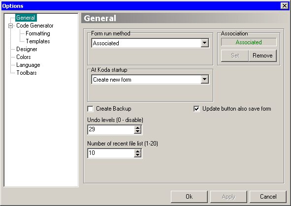

Method for running a created form. This can be:
Group of options controlling program behavior after start. This may be:
Here there are two button options (one can be grayed if not applicable):
When this option is checked, Koda will perform a back-up of the working KXF file, each time you save it. The backup copy will have the same name as that of the form, with an additional BAK extension appended.
This spinner sets the number of building/editing steps Koda can undo. Setting this configuration to 0 (zero) disables the Undo functionality.
Defines the number of recently opened files listed in the File -> Recent files menu.
Selecting this option allows you choose if, during update, the associated form is save.